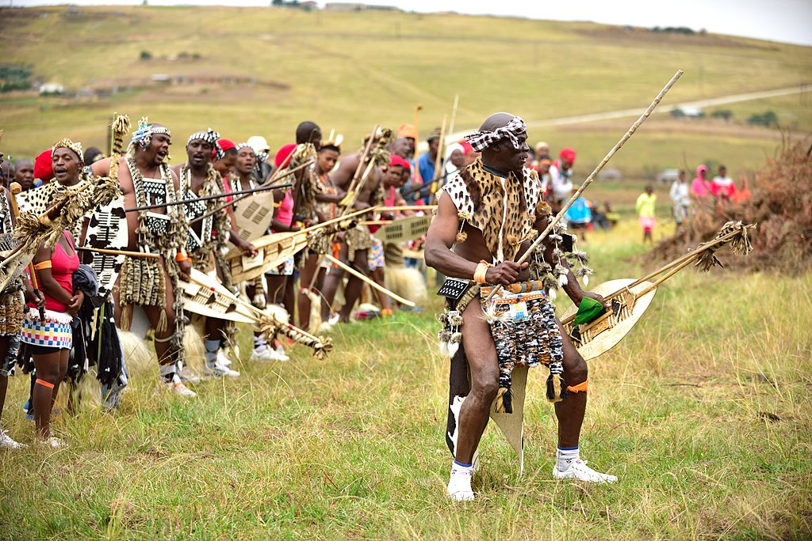
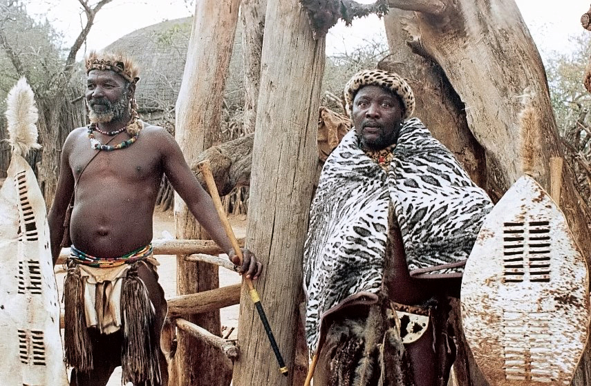

South Africa
A diversity of cultures and landscapes, revealing the rich heritage and modernism.
A diversity of cultures and landscapes, revealing the rich heritage and modernism.
In South Africa, respect for elders is very important. The younger generations often greet elders politely and with respect. Sometimes even by bowing or using respectful phrases - like saying: "Thank you for being our source of wisdom.
If you visit someone, don’t expect that just saying "Hello” only to the host will be enough - here it is customary to greet with everyone in the room. Even if it means giving 10 handshakes and 10 smiles, it is a sign of respect and friendliness.

In South Africa, friends can just come by without any notice - after all, who needs those notices when you just want to be together? Here, these types of visits mean: "I thought about you - I came by for coffee!”
A guest left? Escort him to the gate or car. It’s a very beautiful tradition, showing consideration and care - like saying: "Thank you for coming - have a safe trip!”
In South Africa, dinner - it’s not just food, it’s conversation time. After work, the whole family, friends, maybe even neighbours gather together. It’s a warm, filling and cozy time.
"Braai” - the real heart of the culture. It’s not just a grill - it’s an event! Everybody brings something - from sausages to pickled vegetables - and chat around the fire. There’s music, laughter, story-sharing - the real South African taste of life!
South Africans like to chat - whether it's a conversation in line or a friendly greeting on the street. They’re open, warm and very hospitable - so, if a stranger comes up to talk to you, don’t be surprised - he just wants to chat!
Human Rights Day, celebrated on March 21st, is to honour the fight for human rights and to commemorate the Sharpeville massacre. It is commemorated with a minute of silence and events dedicated to honoring human rights.
The Good Friday is celebrated before Easter, a Christian day of silence and reflection. Christian services and processions take place.
Family Day is celebrated on the Monday after Easter, designated to spend time with family and to relax. Family gatherings and picnics in nature are held.
Freedom Day is celebrated on April 27th, the anniversary of the first democratic elections in 1994 is commemorated. Official events, concerts and a flag-raising ceremony are held.
Youth Day is celebrated on June 16th, the students, who died in 1976 Sowet protests, are honoured. Events and celebrations are held.
Women’s Day is celebrated on August 9th, women and their fights for equality are honoured. Meetings and events to honour fights for the equality for women are held.
Heritage Day is celebrated on September 24th, South African cultural and historic heritage aspects are honoured.
Day of Reconciliation is celebrated on December 16th with events of peace and reconciliation, some people attend participate in services and commemorations of historical events.
Here’s some often used phrases in South Africa! These phrases will help you not to get lost during conversations. However, use them with cautions, because if you get carried away, it can come across as rude.
Meaning: talking rudely or arguing.
Usage: "Don't tune me like that!"
Quite a "street” saying, more often used amongst youngsters or in an informal context.
A tip! Avoid using it with strangers or elders - it can sound offensive.
Meaning: gossip, gossiping about others.
Usage: "She was skinnering about her boss."
The word comes from Afrikaans, in South Africa, very common between friends.
A tip! Use only in an informal context, because this means negative behaviour.
Meaning: all good, understood, farewell.
Usage: "Okay, see you later - sharp sharp!"
A very friendly phrase, commonly used in everyday conversations.
A tip! It’s a very local slang - in some other countries, people might not understand.
Meaning: "let’s go eat”, "let’s eat”.
Usage: "I'm starving - let's chow!"
"Chow” is a generic word for food (like "grub”).
A tip! It’s an informal phrase - don’t use it in official conversations or in a business atmosphere.
Meaning: "until next time”, "see you”.
Usage: "Alright, I'm off. Check you later!"
It’s a short and friendly farewell, common amongst youngsters.
A tip! Outside South Africa, people may not understand that it means "see you”.
Meaning: friend, pal, comrade.
Usage: "Hey chommie, how's it going?"
The word comes from Afrikaans ("tjommie”), very warm and friendly.
A tip! Use with people you’re close with - it is very colloquial and familiar.
Meaning: brother, friend, pal.
Usage: "Thank's for the help, boet!"
This is how you address friends or brothers. It’s a very common word in South Africa.
A tip! It is a word mostly used amongst men - it can sound strange, when used amongst women.
Meaning: disappointment, disbelief.
Usage: "Ach man, not this again!"
This is an emotional interjection from Afrikaans, common in everyday speech.
A tip! Used as a colloquial emotional reaction - best understood in South Africa.
Meaning: to have fun, to have a good time.
Usage: "We had such a jol at the party last night!"
It’s a very popular South African word, often used to describe happy moments with friends.
A tip! Used only in informal conversations - (pakeisti į kablelį) in other countries it might not be understood, so it’s better to use "had fun”.

Here’s some things you should never do, if you want to blend in and avoid uncomfortable situations. Follow these tips to make a great impression!
| Don't: | Why? | What to do instead: | |
|---|---|---|---|
| Ignore the Cultural Diversity | South Africa is called "The Rainbow of Nations” - there are many nations, languages, and traditions here. General stereotypes or descriptions can be offensive. | Be open and respect different cultures- learn at least one greeting in their language! |  |
| Laugh at the Accent or Language Differences | Many South Africans speak multiple languages. Making fun of the accents is considered very rude. | Listen intently and avoid correcting. | |
| Be Late to Official Meetings | While South Africans are often flexible when it comes to personal meetings, punctuality is important in business. In business, being late can be seen as disrespectful. | Be on time or inform if you're late. | |
| Demonstrate Excessive Familiarity With Strangers | It can be taken as an invasion of personal space. For example, handshaking or hugging too soon. | Wait for the person to initiate contact first. | |
| Make Fun of Traditional Clothing or Customs | Some tribes wear distinctive clothing or jewellery. It is a part of their identity and pride. | Show respect and find out their meaning. |  |
| Call All Africans "African” as a One Group | Africa - a huge, very diverse continent, and South Africa - just one of the many countries. | Be specific - talk about "South Africans”, "Zulus”, "Xhosa Nation” or others. | |
| Use Old or Offensive Terms About Race | Due to the history of apartheid in the country, racial issues are very sensitive. | Talk with respect and knowingly, avoid slang or historic insults. |
A hero, who forgave to unite the country. A fighter for freedom and a former president of South Africa. His efforts to abolish apartheid changed the history of the country.
"It always seems impossible until it's done."
The ambassador of humour with a spicy tongue and worldview. A comedian and a former "The Daily Show" host, known for his ingenious stories about politics and culture.
"I don't regret anything I've ever done in my life, any choice that I've made."
A Hollywood star from Africa, admired for both her talent and elegance.A Hollywood actress and an "Oscar" laureate, know for strong roles and activism in social issues.
"I don't regret anything I've ever done in my life, any choice that I've made."